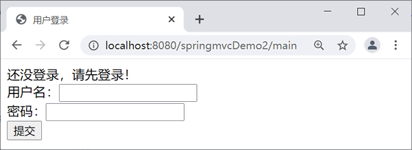
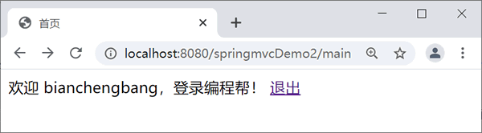
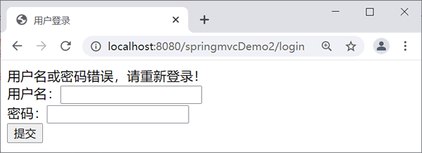

首页 > 编程笔记
Spring MVC拦截器（Interceptor）
在系统中，经常需要在处理用户请求之前和之后执行一些行为，例如检测用户的权限，或者将请求的信息记录到日志中，即平时所说的“权限检测”及“日志记录”。当然不仅仅这些，所以需要一种机制，拦截用户的请求，在请求的前后添加处理逻辑。
Spring MVC 提供了 Interceptor 拦截器机制，用于请求的预处理和后处理。
在开发一个网站时可能有这样的需求：某些页面只希望几个特定的用户浏览。对于这样的访问权限控制，应该如何实现呢？拦截器就可以实现上述需求。在 Struts2 框架中，拦截器是其重要的组成部分，Spring MVC 框架也提供了拦截器功能。
Spring MVC 的拦截器（Interceptor）与 Java Servlet 的过滤器（Filter）类似，它主要用于拦截用户的请求并做相应的处理，通常应用在权限验证、记录请求信息的日志、判断用户是否登录等功能上。
本节以实现 HandlerInterceptor 接口的定义方式为例讲解自定义拦截器的使用方法。示例代码如下。
需要注意的是，<mvc:interceptor> 元素的子元素必须按照 <mvc:mapping.../>、<mvc:exclude-mapping.../>、<bean.../> 的顺序配置。
本节示例基于《@Controller和@RequestMapping注解》一节的 springmvcDemo2 应用实现，具体实现步骤如下。
login.jsp 的代码如下：
从图 1 可以看出，当用户没有登录而直接访问系统主页面时请求将被登录拦截器拦截，返回到登录页面，并提示信息。如果用户在用户名框中输入“bianchengbang”，在密码框中输入“123456”，单击“登录”按钮后浏览器的显示结果如图 2 所示。如果输入的用户名或密码错误，浏览器的显示结果如图 3 所示。
当单击图 2 中的“退出”链接后，系统将从主页面返回到登录页面。
Spring MVC 提供了 Interceptor 拦截器机制，用于请求的预处理和后处理。
在开发一个网站时可能有这样的需求：某些页面只希望几个特定的用户浏览。对于这样的访问权限控制，应该如何实现呢？拦截器就可以实现上述需求。在 Struts2 框架中，拦截器是其重要的组成部分，Spring MVC 框架也提供了拦截器功能。
Spring MVC 的拦截器（Interceptor）与 Java Servlet 的过滤器（Filter）类似，它主要用于拦截用户的请求并做相应的处理，通常应用在权限验证、记录请求信息的日志、判断用户是否登录等功能上。
拦截器的定义
在 Spring MVC 框架中定义一个拦截器需要对拦截器进行定义和配置，主要有以下 2 种方式。- 通过实现 HandlerInterceptor 接口或继承 HandlerInterceptor 接口的实现类（例如 HandlerInterceptorAdapter）来定义；
- 通过实现 WebRequestInterceptor 接口或继承 WebRequestInterceptor 接口的实现类来定义。
本节以实现 HandlerInterceptor 接口的定义方式为例讲解自定义拦截器的使用方法。示例代码如下。
package net.biancheng.interceptor;
import javax.servlet.http.HttpServletRequest;
import javax.servlet.http.HttpServletResponse;
import org.springframework.web.servlet.HandlerInterceptor;
import org.springframework.web.servlet.ModelAndView;
public class TestInterceptor implements HandlerInterceptor {
@Override
public void afterCompletion(HttpServletRequest request,
HttpServletResponse response, Object handler, Exception ex)
throws Exception {
System.out.println("afterCompletion方法在控制器的处理请求方法执行完成后执行，即视图渲染结束之后执行");
}
@Override
public void postHandle(HttpServletRequest request,
HttpServletResponse response, Object handler,
ModelAndView modelAndView) throws Exception {
System.out.println("postHandle方法在控制器的处理请求方法调用之后，解析视图之前执行");
}
@Override
public boolean preHandle(HttpServletRequest request,
HttpServletResponse response, Object handler) throws Exception {
System.out.println("preHandle方法在控制器的处理请求方法调用之前执行");
return false;
}
}
上述拦截器的定义中实现了 HandlerInterceptor 接口，并实现了接口中的 3 个方法，说明如下。- preHandle( )：该方法在控制器的处理请求方法前执行，其返回值表示是否中断后续操作，返回 true 表示继续向下执行，返回 false 表示中断后续操作。
- postHandle( )：该方法在控制器的处理请求方法调用之后、解析视图之前执行，可以通过此方法对请求域中的模型和视图做进一步的修改。
- afterCompletion( )：该方法在控制器的处理请求方法执行完成后执行，即视图渲染结束后执行，可以通过此方法实现一些资源清理、记录日志信息等工作。
拦截器的配置
让自定义的拦截器生效需要在 Spring MVC 的配置文件中进行配置，配置示例代码如下：
<!-- 配置拦截器 -->
<mvc:interceptors>
<!-- 配置一个全局拦截器，拦截所有请求 -->
<bean class="net.biancheng.interceptor.TestInterceptor" />
<mvc:interceptor>
<!-- 配置拦截器作用的路径 -->
<mvc:mapping path="/**" />
<!-- 配置不需要拦截作用的路径 -->
<mvc:exclude-mapping path="" />
<!-- 定义<mvc:interceptor>元素中，表示匹配指定路径的请求才进行拦截 -->
<bean class="net.biancheng.interceptor.Interceptor1" />
</mvc:interceptor>
<mvc:interceptor>
<!-- 配置拦截器作用的路径 -->
<mvc:mapping path="/gotoTest" />
<!-- 定义在<mvc:interceptor>元素中，表示匹配指定路径的请求才进行拦截 -->
<bean class="net.biancheng.interceptor.Interceptor2" />
</mvc:interceptor>
</mvc:interceptors>
在上述示例代码中，元素说明如下。
- <mvc:interceptors>：该元素用于配置一组拦截器。
- <bean>：该元素是 <mvc:interceptors> 的子元素，用于定义全局拦截器，即拦截所有的请求。
- <mvc:interceptor>：该元素用于定义指定路径的拦截器。
-
<mvc:mapping>：该元素是 <mvc:interceptor> 的子元素，用于配置拦截器作用的路径，该路径在其属性 path 中定义。path 的属性值为
/**时，表示拦截所有路径，值为/gotoTest时，表示拦截所有以/gotoTest结尾的路径。如果在请求路径中包含不需要拦截的内容，可以通过 <mvc:exclude-mapping> 子元素进行配置。
需要注意的是，<mvc:interceptor> 元素的子元素必须按照 <mvc:mapping.../>、<mvc:exclude-mapping.../>、<bean.../> 的顺序配置。
示例
下面通过拦截器来完成一个用户登录权限验证的 Web 应用，具体要求如下：只有成功登录的用户才能访问系统的主页面 main.jsp，如果没有成功登录而直接访问主页面，则拦截器将请求拦截，并转发到登录页面 login.jsp。当成功登录的用户在系统主页面中单击“退出”链接时回到登录页面。本节示例基于《@Controller和@RequestMapping注解》一节的 springmvcDemo2 应用实现，具体实现步骤如下。
1）创建 POJO 类
在 springmvcDemo2 的 net.biancheng.pojo 包中创建 User 类，代码如下。
package net.biancheng.po;
public class User {
private String name;
private String pwd;
/**省略setter和getter方法*/
}
2）创建控制器类
在 springmvcDemo2 的 net.biancheng.controller 包中创建控制器类 UserController，代码如下。
package net.biancheng.controller;
import javax.servlet.http.HttpSession;
import org.springframework.stereotype.Controller;
import org.springframework.ui.Model;
import org.springframework.web.bind.annotation.RequestMapping;
import net.biancheng.po.User;
@Controller
public class UserController {
/**
* 登录页面初始化
*/
@RequestMapping("/toLogin")
public String initLogin() {
return "login";
}
/**
* 处理登录功能
*/
@RequestMapping("/login")
public String login(User user, Model model, HttpSession session) {
System.out.println(user.getName());
if ("bianchengbang".equals(user.getName()) && "123456".equals(user.getPwd())) {
// 登录成功，将用户信息保存到session对象中
session.setAttribute("user", user);
// 重定向到主页面的跳转方法
return "redirect:main";
}
model.addAttribute("msg", "用户名或密码错误，请重新登录！ ");
return "login";
}
/**
* 跳转到主页面
*/
@RequestMapping("/main")
public String toMain() {
return "main";
}
/**
* 退出登录
*/
@RequestMapping("/logout")
public String logout(HttpSession session) {
// 清除 session
session.invalidate();
return "login";
}
}
3）创建拦截器类
在 springmvcDemo2 的 net.biancheng.interceptor 包中创建拦截器类 LoginInterceptor，代码如下。
package net.biancheng.interceptor;
import javax.servlet.http.HttpServletRequest;
import javax.servlet.http.HttpServletResponse;
import javax.servlet.http.HttpSession;
import org.springframework.web.servlet.HandlerInterceptor;
import org.springframework.web.servlet.ModelAndView;
public class LoginInterceptor implements HandlerInterceptor {
@Override
public boolean preHandle(HttpServletRequest request, HttpServletResponse response, Object handler)
throws Exception {
// 获取请求的URL
String url = request.getRequestURI();
// login.jsp或登录请求放行，不拦截
if (url.indexOf("/toLogin") >= 0 || url.indexOf("/login") >= 0) {
return true;
}
// 获取 session
HttpSession session = request.getSession();
Object obj = session.getAttribute("user");
if (obj != null)
return true;
// 没有登录且不是登录页面，转发到登录页面，并给出提示错误信息
request.setAttribute("msg", "还没登录，请先登录！");
request.getRequestDispatcher("/WEB-INF/jsp/login.jsp").forward(request, response);
return false;
}
@Override
public void afterCompletion(HttpServletRequest arg0, HttpServletResponse arg1, Object arg2, Exception arg3)
throws Exception {
// TODO Auto-generated method stub
}
@Override
public void postHandle(HttpServletRequest arg0, HttpServletResponse arg1, Object arg2, ModelAndView arg3)
throws Exception {
// TODO Auto-generated method stub
}
}
4）配置拦截器
在 WEB-INF 目录下创建配置文件 springmvc-servlet.xml 和 web.xml。web.xml 的代码和 springmvcDemo2 一样，这里不再赘述。在 springmvc-servlet.xml 文件中配置拦截器 LoginInterceptor，代码如下。
<!-- 配置拦截器 -->
<mvc:interceptors>
<mvc:interceptor>
<!-- 配置拦截器作用的路径 -->
<mvc:mapping path="/**" />
<bean class="net.biancheng.interceptor.LoginInterceptor" />
</mvc:interceptor>
</mvc:interceptors>
5）创建视图 JSP 页面
在 WEB-INF 目录下创建文件夹 jsp，并在该文件夹中创建 login.jsp 和 main.jsp。login.jsp 的代码如下：
<%@ page language="java" contentType="text/html; charset=UTF-8"
pageEncoding="UTF-8"%>
<!DOCTYPE html PUBLIC "-//W3C//DTD HTML 4.01 Transitional//EN" "http://www.w3.org/TR/html4/loose.dtd">
<html>
<head>
<meta http-equiv="Content-Type" content="text/html; charset=UTF-8">
<title>用户登录</title>
</head>
<body>
${msg }
<form action="${pageContext.request.contextPath }/login" method="post">
用户名：<input type="text" name="name" /><br>
密码：<input type="password" name="pwd" /><br>
<input type="submit" value="登录" />
</form>
</body>
</html>
main.jsp 的代码如下：
<%@ page language="java" contentType="text/html; charset=UTF-8"
pageEncoding="UTF-8"%>
<!DOCTYPE html PUBLIC "-//W3C//DTD HTML 4.01 Transitional//EN" "http://www.w3.org/TR/html4/loose.dtd">
<html>
<head>
<meta http-equiv="Content-Type" content="text/html; charset=UTF-8">
<title>首页</title>
</head>
<body>
欢迎 ${user.name }，登录编程帮！<br />
<a href="${pageContext.request.contextPath }/logout">退出</a>
</body>
</html>
6）发布并测试应用
首先将 springmvcDemo2 应用发布到 Tomcat 服务器并启动 Tomcat 服务器，然后通过地址“http://localhost:8080/springmvcDemo2/main”测试应用，运行效果如图 1 所示。

图 1 没有登录直接访问主页面的效果
图 1 没有登录直接访问主页面的效果
从图 1 可以看出，当用户没有登录而直接访问系统主页面时请求将被登录拦截器拦截，返回到登录页面，并提示信息。如果用户在用户名框中输入“bianchengbang”，在密码框中输入“123456”，单击“登录”按钮后浏览器的显示结果如图 2 所示。如果输入的用户名或密码错误，浏览器的显示结果如图 3 所示。

图 2 成功登录的效果
图 2 成功登录的效果

图 3 用户名或密码错误
图 3 用户名或密码错误
当单击图 2 中的“退出”链接后，系统将从主页面返回到登录页面。
关注公众号「站长严长生」，在手机上阅读所有教程，随时随地都能学习。内含一款搜索神器，免费下载全网书籍和视频。

微信扫码关注公众号